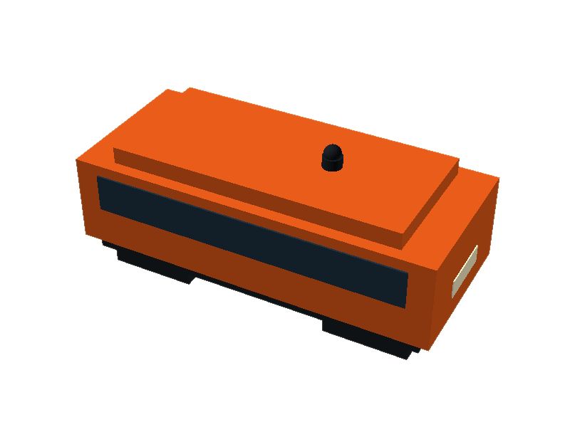
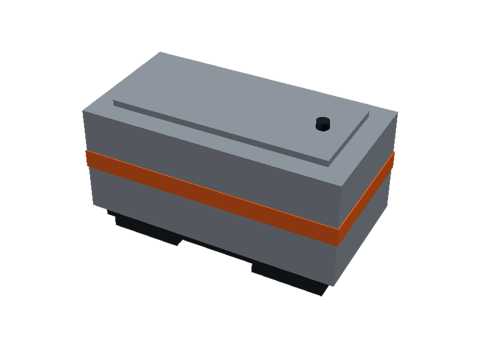
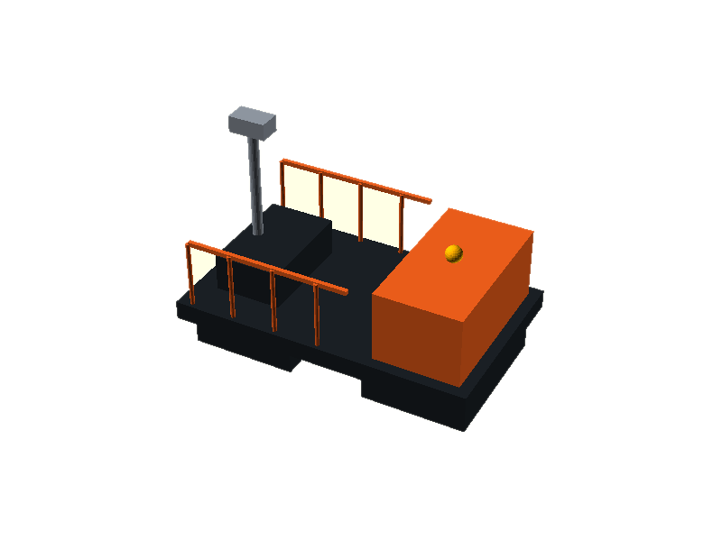
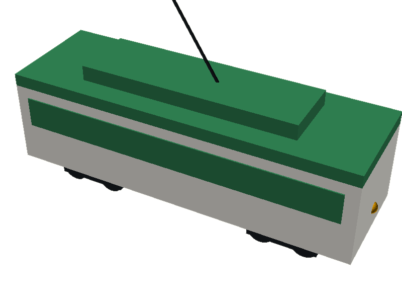

A working transit line in the training district
The Forge Line.
The Forge Line runs in our 3D training district — an elevated, automated guideway with four rendered stations, running vehicles, and a Forge Pod you can board — plus a proposed high-speed viaduct connecting to Amtrak intercity service. Modeled on the real transit Detroit already runs.
The network
First rails in the district.
The Forge Line’s rails are running in the 3D district now: an elevated local line in forge orange running Thinkabit Lab → UM Center for Innovation → Detroit Riverfront → Academy HQ, with four rendered stations. Beside it, the steel-blue viaduct is the proposed high-speed connection to Amtrak intercity service — Detroit — Windsor — Toronto — terminating at the Amtrak Intercity transfer. Solid lines are built in-scene; the dashed line is the proposal.
Stations
Five stops. Two lines.
Thinkabit Lab Forge Line · west
Young builders, real tools. The lab stop — rendered station in-scene.
UM Center for Innovation Forge Line · north
U-M’s Detroit innovation hub — six stories of glass leaning into the future. Rendered station in-scene.
Detroit Riverfront Forge Line · south
Where the district meets the water. The greenway stop — rendered station in-scene.
Academy HQ Forge Line · interchange
The Academy’s front door — the Central Interchange: rendered concourse, stair tower to the platform, and enclosed station hall in-scene.
Amtrak Intercity High-speed line · proposed
The proposed Detroit — Windsor — Toronto terminus: viaduct and transfer hall stand in-scene, the service doesn’t exist yet.
Real-world roots
Modeled on Detroit, not invented.
The Forge Line runs in the district, and none of its parts are fiction. Every layer maps to transit Detroit already operates — or just voted to build.
-
Detroit People Mover → the automation
Driverless, elevated, frequent pods. The Forge Line runs the same technology class — automated guideway transit — and the same idea: a small, legible network that just works. The real one has been zero-fare since 2024.
-
QLINE → the heritage layer
The streetcar runs Woodward in mixed traffic. A future at-grade heritage loop around the plaza is reserved as Phase 2.
-
Academy HQ → the east terminus
The east spoke ends at the Academy’s new headquarters in Corktown.
-
DDOT / SMART → the training bot
The bot is already an on-demand shuttle (
go <place>). The Forge Line is the rapid trunk; the bot is the last-mile Flex — the same two-layer pattern voters funded on August 4, when Wayne County approved the transit millage 67–33. -
Amtrak → the intercity connection
The high-speed viaduct is the proposal, drawn from a real one. Amtrak’s Wolverine runs Detroit–Chicago three times daily from 11 W Baltimore Ave in New Center, hitting 110 mph on upgraded Michigan segments — and in October 2025 MDOT, the City of Detroit, and Michigan Central signed a $40M agreement to engineer a multimodal hub by the Corktown station that would extend Wolverine service across the river to Windsor and, via VIA Rail, Toronto, targeting 2028. The in-scene viaduct and Amtrak Intercity platform are the academy’s model of that future; the service itself doesn’t exist yet. Sources: Detroit station, Trains.com on the 2025 hub agreement.
Prototype series
Four vehicles. Four jobs.
One guideway, different work. Each prototype is modeled in CAD at real scale — passenger, cargo, maintenance, and heritage service. Renders below are straight from the models.

Forge Pod Passenger
6.0 × 2.6 × 2.7 m · 6 riders
Spoke service: Central Interchange to every district. Automated, 90-second headways, zero-fare.
Rendered CAD model + site render · not yet in the 3D district

Forge Hauler Cargo
5.0 × 2.6 × 3.0 m · 800 kg
Moves equipment and materials between the Workshop and the labs on the same guideway.
Rendered CAD model + site render · not yet in the 3D district

Line Tender Maintenance
4.0 × 2.4 m flatbed · crew of 2
Guideway inspection and repair: sensor mast, railed work platform, amber beacon.
Rendered CAD model + site render · not yet in the 3D district

Heritage Car Streetcar · Phase 2
8.3 × 2.6 × 5.1 m · 24 riders
At-grade plaza loop. A QLINE homage in cream and green, trolley pole and all.
Rendered CAD model + site render · Phase 2, not yet in the 3D district
Real Detroit today
The buses are already running.
The Forge Line is modeled on the real transit Detroit already runs. Below: a live count of DDOT buses on Vernor, Woodward, Greenfield and Dexter right now, refreshed every minute from the agency’s own vehicle feed.
Loading live positions…
Next arrivals
Live buses near key stops — observed positions from the agency feed, not schedule predictions. Schedule data is currently unavailable.
Loading live positions…
Live data: DDOT via Clever Devices BusTime. SMART live feed in progress. Building something? The transit data API is open to developers.
Build status
A concept, being prototyped.
The Forge Line’s first rails are standing — the elevated guideway and the Amtrak viaduct are in the 3D district now. The vehicles are still prototypes on paper and CAD. Here’s where each piece stands:
Vehicles — prototype series
Forge Pod Rendered
Passenger pod, 6 riders. CAD model at true scale (cad/transit.scad) with the site render above. No in-scene vehicle yet.
Forge Hauler Rendered
Cargo pod, 800 kg. CAD model + render done. Shares the guideway with passenger service in the plan; nothing placed in-scene.
Line Tender Rendered
Maintenance flatbed, crew of 2. CAD model + render done. Inspection routines are still on paper.
Heritage Car Rendered
Phase 2 streetcar, 24 riders. CAD model + render done. The at-grade plaza loop it would run on is reserved, not built.
Infrastructure — the fixed plant
Elevated guideway Rendered
The Forge Line guideway stands in the 3D district: elevated deck on pylons, four rendered stations (Thinkabit Lab, UM Center for Innovation, Detroit Riverfront, Academy HQ). Heritage shuttle, Forge Pod and intercity-concept services run it.
Amtrak high-speed connection Concept
The viaduct and Amtrak Intercity transfer platform are in-scene; the intercity service is the proposal — modeled on the real 2025 plan to extend Amtrak’s Wolverine to Windsor and Toronto. See the network section for sources.
Station buildings Rendered
Enclosed waiting halls stand on all four Forge Line platforms; the Central Interchange concourse and stair tower are in-scene at Academy HQ.
Central Interchange Rendered
The interchange concourse and stair tower stand at Academy HQ, linking the ground concourse to the platform deck.
In-scene vehicle Rendered
The Forge Pod runs the line with station stops; the Heritage shuttle and an intercity concept service run beside it.
ride command Rendered
Type ride in the demo terminal (or tap the ride chip) to board the Forge Pod; hop off — or grabbing the canvas — hands the camera back.